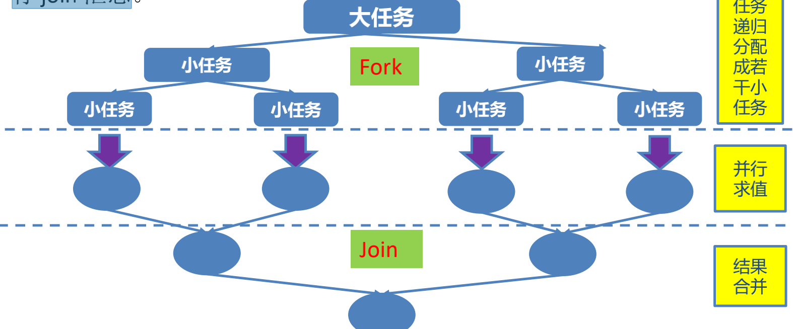

ForkJoinPool 分支合并框架 工作窃取
Fork/Join
Fork/Join 框架：就是在必要的情况下，将一个大任务，进行拆分(fork)成若干个小任务（拆到不可再拆时），再将一个个的小任务运算的结果进行 join 汇总 
与线程池的区别
- 采用 “工作窃取”模式（work-stealing）：当执行新的任务时它可以将其拆分分成更小的任务执行，并将小任务加到线程队列中，然后再从一个随机线程的队列中偷一个并把它放在自己的队列中。
- 相对于一般的线程池实现，fork/join框架的优势体现在对其中包含的任务的处理方式上.在一般的线程池中，如果一个线程正在执行的任务由于某些原因无法继续运行，那么该线程会处于等待状态。而在fork/join框架实现中，如果某个子问题由于等待另外一个子问题的完成而无法继续运行。那么处理该子问题的线程会主动寻找其他尚未运行的子问题来执行.这种方式减少了线程的等待时间，提高了性能
测试代码
public class TestForkJoinPool {
public static void main(String[] args) {
Instant start = Instant.now();
ForkJoinPool pool = new ForkJoinPool();
ForkJoinTask<Long> task = new ForkJoinSumCalculate(0L, 50000000000L);
Long sum = pool.invoke(task);
System.out.println(sum);
Instant end = Instant.now();
System.out.println("耗费时间为：" + Duration.between(start, end).toMillis());
}
@Test
public void test1() {
Instant start = Instant.now();
long sum = 0L;
for (long i = 0L; i <= 50000000000L; i++) {
sum += i;
}
System.out.println(sum);
Instant end = Instant.now();
System.out.println("耗费时间为：" + Duration.between(start, end).toMillis());
}
//java8 新特性
@Test
public void test2() {
Instant start = Instant.now();
Long sum = LongStream.rangeClosed(0L, 50000000000L)
.parallel()
.reduce(0L, Long::sum);
System.out.println(sum);
Instant end = Instant.now();
System.out.println("耗费时间为：" + Duration.between(start, end).toMillis());
}
}
class ForkJoinSumCalculate extends RecursiveTask<Long> {
/**
*
*/
private static final long serialVersionUID = -259195479995561737L;
private long start;
private long end;
private static final long THURSHOLD = 10000L; //临界值
public ForkJoinSumCalculate(long start, long end) {
this.start = start;
this.end = end;
}
@Override
protected Long compute() {
long length = end - start;
if (length <= THURSHOLD) {
long sum = 0L;
for (long i = start; i <= end; i++) {
sum += i;
}
return sum;
} else {
long middle = (start + end) / 2;
ForkJoinSumCalculate left = new ForkJoinSumCalculate(start, middle);
left.fork(); //进行拆分，同时压入线程队列
ForkJoinSumCalculate right = new ForkJoinSumCalculate(middle + 1, end);
right.fork(); //
return left.join() + right.join();
}
}